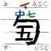

古琴琴谱之字体
序言
古琴有一种非常特殊的琴谱——减字谱。一个“字”有好几部分，比如弹哪弦、按哪徽、怎样弹、滑到哪徽、等等。
想读更多历史，百度百科的减字谱文章可以看一看。另一个资料是peiyouqin，有解释减字谱每部分的意思。为外国人，都是英语的。我在这里就不说什么历史/用法了。
减字谱正常是手写的，于是在电脑上输入很麻烦，并且读的时候也可能难读，写得很挤，低清晰度不清楚。我从来都没有看到个电子字体，除了现在。
我为这种琴谱做了个字体，从Noto Sans SC为本以上作了新的字，这让用户输入（大部分的）减字谱，并可以输入正常中文。一个古琴有七弦和十三徽，每徽中间分十分，并有十来个弹法，我到底怎么样能做这个呢？
做字体

基本主意是用合字形（ligatures）。合字形就是把一些字母联起来，变成一个字形。这种技能正常所用的是使字母整齐得联起来，例如fi或ffi。这些字母在有些字体里，ff的横画合成一画，f的最上面跟i的点合起来。就这样的。我计划用特殊的指挥字母：\、|、/、-，表示合字之始，后面有个编码决定是那个减字谱之字。这样就允许正常中英输入，但是额外还可以用减字谱。
要每个字当自己的字形，太过分了。甚至借用本字体里的汉字，做一个字形还够麻烦了，所以我的计划就是把一个减字谱之字分成部分。
最通用的字部是弹法：挑、勾、抹、等等。这个字部有个数字（弹哪弦）、动作、后面可以包括左手按哪徽，或散音、也可以上面有个泛音的指示。按徽部分还可以被分成两半，指头和位置。就此我们可以看有五个主要部分。此五需要都能表示，但是不需要我做好几百个字形。
右手弹法，每一个弹法都需要弦数放在不同的位置（勾里的数字不同于抹不同于勾抹）所以每弦都需要做一个——一共七个。不太好，但是可以做。这就是首先的两部搞定了。但是左手位置我就不能这样做下去了，更不能泛音，散音，等等，都每弦做。解决这个的答案就是负距。这就说所定字形的位置是跟前面的字重叠。
现在，想象那种三线的写英语的练习本（知道中文用格子，所以你可能需要更用力想象）。最低的线是下垂画到的位置，最高的线是上升画到的位置。若迷惑，下垂画是p、q字母往下写的笔画，上升画是d、h的从上面开始写的笔画。

下三分之二是”主部“的位置——这就是弦数和弹法——而上三分之一是为左手指法。其他的改性部在高线之上，所以推荐用一个大一点的行距，至少1.5。这样，每个改性部只需要一个字形。问题是，到这里我们又遇到了个问题——徽位置。如上文所述，琴上有13徽，每徽可分成10分，所以做么个，一共130个字形，还要崩溃了。幸亏很多分数都不是真正的音调，只有……十来个常用的徽位，所以包括整数，我只需要做20几个字形，这样好多了。当然，这生产另一个问题：非正规的位置不允许，但是到那里就自己去加进去吧。如果是常用而我不知，那在GH上通知我，我加进去。
这些位置（不包括整数）是：
5.6, 6.4, 7, 7.3, 7.6, 7.9, 8.5, 9, 10, 10.8, 12.3, 13.1
为”滑音“（上/下）主字是上述的上/下，这放在最上面。然后，数字结合上去。我们不能光用正规徽位（原因待会说）所以（如图片）我把中下的数字分成两部分。整数的徽，只用一个数字——尽量用最低的数字，但是也可以用中间的。中间的数字从1到13，底下的数字从1到9，也包括半和外。
还有一个撮弹法，写的大概想一个大的早，早的左右下角写两弦和徽位，就表示两弦同弹。这个问题是需要两个不同的字，在一个字下边。我真不想做更多联部，所以我解决了，把这个早做成”双宽“的字，然后调整位置让两边的字看着像在早之下。这个早会在上升线以上，但是这是故意的。
还要观看这个历弹法，因为里边正常有两个数字，表示两弦联弹。造成历的系统跟滑的系统一样，用滑音的数字来造。这是为什么我把滑音的两数字分开的。
其他的小字，比如泛起、泛止、复、退、撞、等等，都只是一个字而已，所以非常简单。最后的问题就是怎么样处理注音和绰音。表示注是用个三点水旁，用负距可以省事处理，但是更大问题是绰。表示绰是用个小卜字，在徽位之下写的。在这一个地方，我的字体跟正规的减字谱有区别了。我把这个卜字放在泛音的位置。我觉得这个小区别应该没什么问题，因为所表示的还是很清楚。
结言
到此，就完成了。如果你读到这里你真是对此有兴趣——网页之头上有超链到这个字体的GitHub，也有到我所记下的琴谱。这个字体是用BirdFont做的，而用个Open Font License。因为是个完整的中文字体，文件非常大。
因为GitHub在墙内禁止，可以从这里下载。（从2022年二月字体已经被更新了，而现在不包括汉字，只有古琴谱字。）